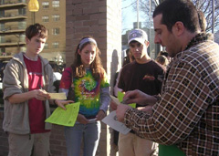

Pittsburgh Starbucks Union Rises Up on Global Day of Action
Submitted on Sun, 11/26/2006 - 2:57am
PITTSBURGH, PA—Local members of the Industrial Workers of the World (IWW), joined by Friends of Labor supporters from across the city, participated in the IWW Starbucks Union’s “Global Days of Action” in a picket held here on November 24, 2006. For an hour on a sunny Friday afternoon, over twenty workers supporting the Starbucks Workers Union carried picket signs and loudly chanted in front of the Squirrel Hill Starbucks at the corner of Forbes and Shady Avenue. This was part of a broader movement in many cities around the world to protest Starbucks’ anti-union practices and the wrongful termination of five union workers.
As the post-lunch crowd milled about, union activists entered the store in an attempt to talk with employees and customers, and formed a line extending from the registers back to the entrance. The pro-union customers were faced with so many beverage options that it took a while to decide what they wanted. Others dug through their pockets and realized that while they had enough for a tip, they would have to put the price of their small but expensive beverage on a credit card.
Store managers demanded that no leafleting or union discussions take place inside the store. A union member in line to purchase a drink was asked to leave the store immediately after he mentioned the picket to another customer. “While I was being forced out the door for simply mentioning the union to another paying customer,” said IWW member Kevin Farkas, “I asked the manager if my right to free speech stopped because I was inside Starbucks. His response was, ‘No it doesn’t, but you’ll still have to leave now. You can’t talk to the customers about that stuff.’” Farkas went on to say, “This is the kind of anti-free speech, union-busting nonsense that Starbucks workers face everyday. Starbucks says that it doesn’t interfere with unionizing, but today proves otherwise. Imagine, trying to tell paying customers what they can and can not talk about to each other. It’s shameful behavior and bad business for a company that boasts of its so-called progressive image.”
In all the excitement, people’s appetites grew, especially after seeing their fellow union member tossed from the store, and so many supporters got back in line to eye-up the pastries. But what turned out to be a very limited feast did not end there. At mid-afternoon union activists took to the public sidewalk in front of the store and began their picket. Management came outside to present customers with free samples to entice them past the protestors. Union members and supporters found these samples helped them warm-up on the picket line.
Motorists honked and waved their support, taking flyers from the picketers. Several people, including many customers coming from Starbucks, signed up to be a “Friend of Labor,” the union’s way of getting customers to pledge support for the Starbucks Workers Union and boycott. “It’s amazing how many Starbucks customers don’t know what it’s like to work at Starbucks,” said Ken Miller, an IWW member and former Starbucks worker. “Once we explain the hardships of employees, people are sympathetic and supportive of unionization. I’ve signed up many people as Friend of Labor supporters. That’s a good sign for workers. If the company won’t pay attention to their own employees, we can always count on the customers.”
Picket organizers noted that employees and managers at the Squirrel Hill Starbucks certainly paid attention to the protesters. Several baristas (Starbucks term for their retail sector employees) eventually came out of the store to see what was going on. It was a chance for activists to talk openly about the union with baristas but managers kept a watchful eye on their workers. Meanwhile, Starbucks managers were seen frantically making phone calls, conferring with each other, and even contacting the local police. Union sources familiar with the local Starbucks structure noted the presence of high-level management at the store—something unusual for a Friday afternoon. Management also handed out Starbucks’ “official statement” on the union, which was read out loud and ridiculed by the protestors in an impromptu street theatre presentation.
“Current and former Starbucks workers are coming forward to ask how they can get involved,” said IWW member E. W. Wolfson. “They realize that instead of just quitting, they should fight to make their jobs better, and that will benefit everyone in the industry.”
Friday’s picket action was motivated in part by the recent firings of pro-union Starbucks workers in New York City. Between December 2005 and November 2006, Starbucks fired Joseph Agins, Jr., Charles Fostrom, Evan Winterscheidt, Daniel Gross, and Isis Saenz, on pretexts ranging from insubordination to undermining employee morale. The National Labor Relations Board is investigating these firings and is not expected to have a ruling until sometime next year. However, in March 2006 the NLRB did reach a settlement with Starbucks directing the company to respond to a number of IWW allegations of unfair labor practices.
The March 2006 NLRB settlement reinstated two workers active with the union movement and forced Starbucks to pay roughly $2,000 in back pay to three employees and change discriminatory policies, including the workers’ right to wear union buttons (which Starbucks had denied them) and to distribute union materials in the workplace. Starbucks also promised not to provide employees with benefits, including after-hours store cleaning services, free pizza, free gym passes, and free baseball tickets, in order to encourage employees to withdraw support for the union. A March 2006 Wall Street Journal article by Kris Maher and Janet Adamy states that a Starbucks spokeswoman “wouldn't say specifically whether managers at the company had engaged in the behaviors detailed in the settlement but said ‘there's been no admission of guilt or liability on our part’ and that ‘we believe we've acted fairly.’ She says Starbucks respects the free choice of its workers but believes that its work environment makes unions unnecessary at the company.”
Lisa Stolarski, who works at Jane Street Housekeeping and is an organizer with IWW Industrial Union 680 in Pittsburgh, was a participant in the Black Friday protest. "The corporate world is watching Starbucks right now. If Starbucks gets away with illegally firing workers for organizing activity, then this behavior could set a precedent for chain corporations worldwide. It is essential that every worker and every unionist stand up for the Starbucks 5, because in defending the barista's right to organize we defend the foundation of unionism."
Starbucks may downplay the union as a localized movement, but the global days of action prove otherwise. And messages of solidarity are coming from far and wide. The C.E.K. union in Guinea, Africa declared its support for the union in September. In Paris, members of the French National Confederation of Workers (CNT-F) protested the company’s repeated violations of workers’ rights. The Comite de Solidarite de Madagascar, along with labor unions and groups in Austria, Canada, England, Germany, South Korea, New Zealand, and across the US have also condemned Starbucks’ union-busting. In Massachusetts, the Cambridge City Council has passed a resolution supporting the right of Starbucks workers to organize with the IWW. The United Auto Workers Local 2320 in Brooklyn and Local 2334 in Detroit, SEIU Local 707 in California, AFT Local 3220 in Madison, Wisconsin, Amalgamated Lithographers Local 1 (GCC-IBT) in New York City, and the National Lawyers Guild are also boycotting Starbucks until the fired workers are reinstated.
The Pittsburgh Starbucks Workers Union, along with its Friends of Labor members, is planning a series of protests against Starbucks’ anti-union, anti-worker practices. To learn how you can be involved and support local Starbucks workers, contact the Pittsburgh IWW at PghStarbucksUnion@yahoo.com.